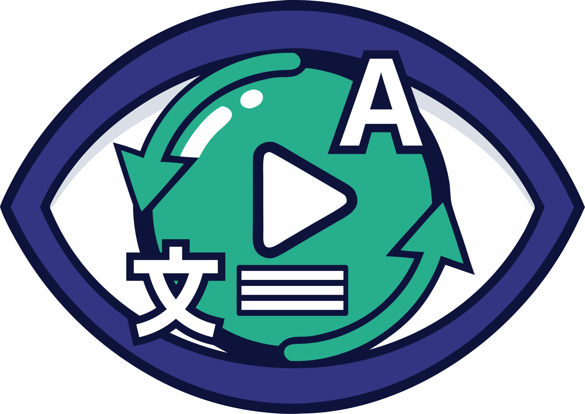
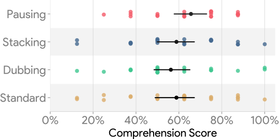
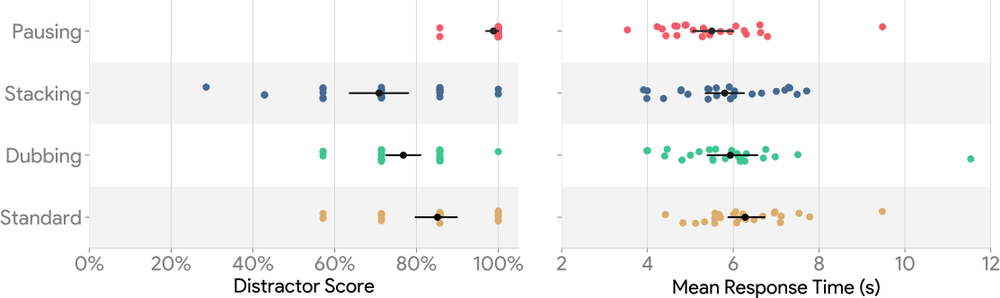
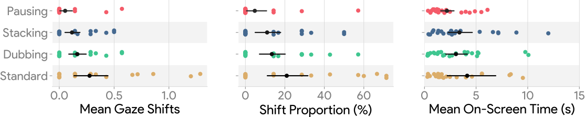
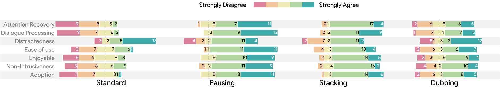

Gaze-Aware Implicit Interventions for
Distraction Recovery in Foreign-Language Videos
[ Video Placeholder ]
Playback pauses the exact moment your gaze leaves the screen. It seamlessly resumes the moment your gaze returns. You miss nothing, and require no manual scrubbing.
Subtitles persist and layer on top of one another if the system detects subtitles have not been read. Once the maximum stack is reached, the system pauses to allow catch-up.
Instead of halting playback, the audio invisibly cuts to an English text-to-speech dub when you look away, shifting comprehension from visual reading to auditory listening.
We conducted a within-subjects user study with 24 participants to evaluate the three gaze-aware interventions against a standard playback baseline. Condition viewing orders were counterbalanced to minimize learning effects. Viewer success was measured using continuous eye-tracking logs, performance on an asynchronous mobile distractor task, and post-task video comprehension quizzes.
Post-study performance showed that viewers managed to score similarly in content comprehension tests across all systems. Although comprehension was not statistically improved over the standard video player, viewers nonetheless preferred the gaze-aware interventions to maintain that parity under distraction.

Pausing the video proved the most effective technique for mitigating distractions, yielding the highest scores (98%) on distractor questions. Participants spent comparable durations responding to the distractors across all methods.

Eye-tracking analysis confirmed that implicit interventions reduce visual demand. Pausing reduced off-screen checks down to 5.4%, compared to 27.6% in a standard workflow.

Viewers heavily favored Pausing. Stacking and Dubbing emerged as intermediate techniques for balancing cognitive load, while the standard video player reliably performed the worst across recovery metrics.

Gaze-adaptive interventions effectively help viewers disengage during distractions without the cognitive burden of monitoring the video. While they keep viewers temporally synchronized during immediate attention lapses, this short-term access does not automatically bridge the gap to long-term conceptual learning or memory.
Abrupt modality transitions (like audio dubbing) can overload working memory for non-fluent viewers managing dual-language processing. While stacking maintains visual context by keeping viewers engaged, strict pausing is most effective at offloading attentional demands.
Fixed thresholds for interventions often misalign with natural reading speeds, sometimes triggering unnecessary disruptions during normal viewing. A seamless experience requires lightweight calibration and adjustable features so interventions feel like a natural extension of viewing behavior.
Currently tested in a controlled environment with short videos, future research will investigate how gaze-adaptive recovery translates to extended viewing sessions, multitasking contexts, and varied device formats like mobile viewing.
While designed for a single viewer, scaling interventions—such as transitioning to AI summaries or pushing catch-up notifications to a personal mobile device—can preserve seamless playback for others in shared-screen environments.
Because our participant sample primarily consisted of viewers who were non-fluent in Spanish/Italian but fluent in English, further evaluations across diverse language pairings are essential to determine how recovery techniques generalize.
Researcher, MSc
Ontario Tech University
Researcher, MSc
Ontario Tech University
 MS
MS
Researcher, Associate Professor
Ontario Tech University
 CC
CC
Professor
Ontario Tech University
@inproceedings{ahmed2026dontwannamissathing,
author={Mohammed Ahmed and Benedict Leung and Mariana Shimabukuro and Christopher Collins},
title={Don't Wanna Miss a Thing: Gaze-Aware Implicit Interventions for Distraction Recovery in Foreign-Language Videos},
year={2026},
publisher = {Association for Computing Machinery},
address = {New York, NY, USA},
url = {https://doi.org/xxxxxxxxxx},
doi = {10.1145/xxxxxxxxxx},
booktitle={Proceedings of the 2026 Symposium on Eye Tracking Research and Applications},
series={ETRA '26},
}Ahmed, M., Leung, B., Shimabukuro, M., & Collins, C. (2026). Don't Wanna Miss a Thing: Gaze-Aware Implicit Interventions for Distraction Recovery in Foreign-Language Videos. In Proceedings of the Symposium on Eye Tracking Research and Applications. ACM.